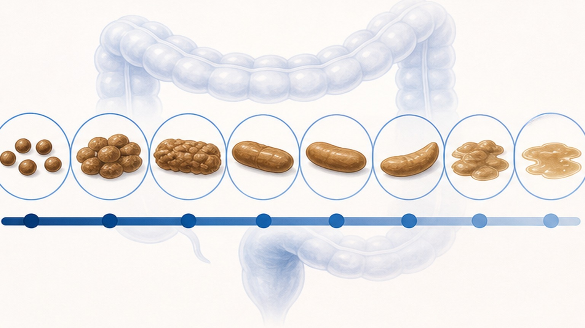
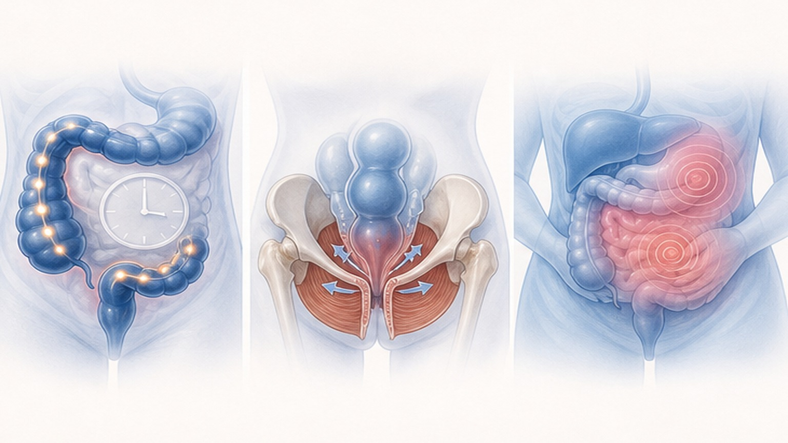
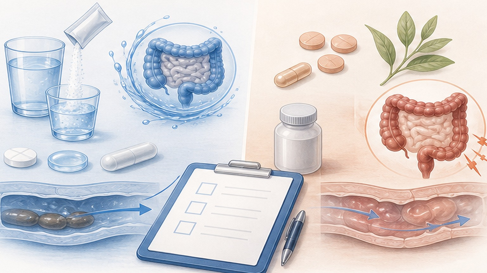
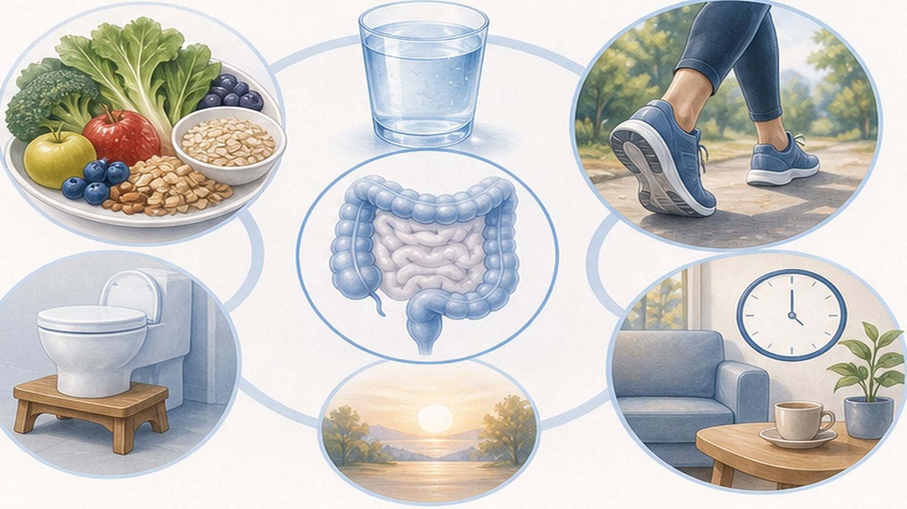

국제 진단 기준(로마 기준 IV)은 세 가지를 봅니다
횟수보다 ‘편안함’과 ‘다 비웠는가’가 더 중요합니다
브리스톨 대변 척도 — 1형(딱딱)부터 7형(물)까지, 목표는 3~4형

하나라도 있으면 단순 변비로 넘기지 말고 대장내시경 등 검사가 필요합니다
정확히 나누는 것이 효과적인 치료의 시작입니다

모든 변비약이 같지 않습니다
| 약 | 얼마나 써도 되나 |
|---|---|
| PEG(마크로골) | 오래 써도 안전합니다 — 장에 물을 붙잡아 변을 부드럽게 하고, 장을 자극하지 않아 내성·의존이 없습니다 |
| 산화마그네슘 | 효과적이지만 콩팥 기능이 떨어졌거나 나이가 많으면 혈중 마그네슘을 정기적으로 확인합니다 |
| 비사코딜(둘코락스) | 장을 자극해 밀어내는 약 — 막혔을 때만 쓰는 구조용, 4주 이내로 |
| 센나·알로에·디톡스 차 | ‘천연’ 이름의 자극성 성분 — 오래 쓴 안전성 근거가 부족해 매일 마시지 않습니다 |

권하는 음식과 권하지 않는 음식
배변 습관을 다시 들이면 작은 실천이 큰 변화를 만듭니다

식사·생활습관·일반 변비약으로도 나아지지 않을 때
변비는 참는 병이 아니라 치료하는 병입니다
QR을 스캔하면 같은 자료를 휴대폰에서 다시 열 수 있습니다